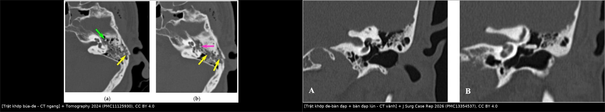
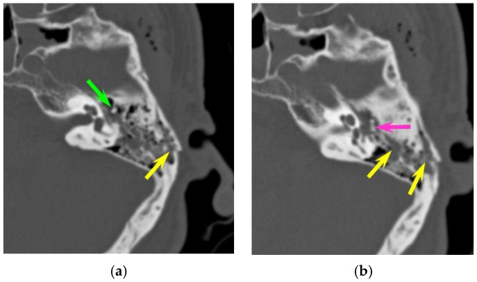
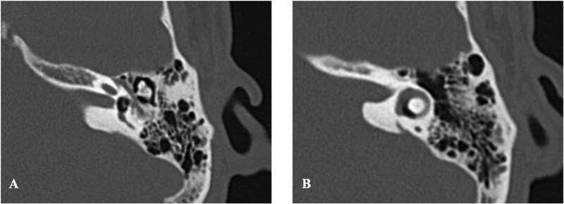
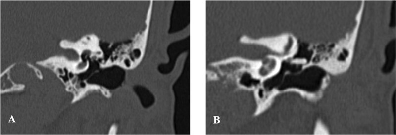
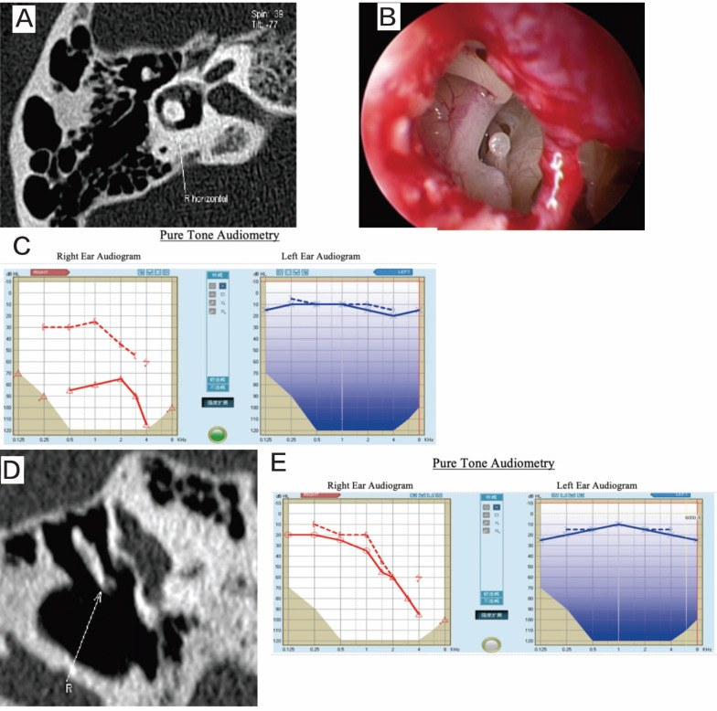

3008 — Trật/gián đoạn chuỗi xương con sau chấn thương xương thái dương ở trẻ: HRCT đọc khớp búa–đe–bàn đạp, phân biệt máu tụ tai giữa & khi nào tái tạo chuỗi
Tags: pattern:gian-doan-xuong-con pattern:trat-khop pattern:di-lich-xuong-con pattern:di-tai-giua pattern:pneumolabyrinth pattern:ro-me-dao vung:tai-giua vung:xuong-thai-duong vung:tai-trong anatomy:chuoi-xuong-con protocol:HRCT-xuong-thai-duong protocol:MPR-nghieng protocol:noi-soi-tai-giua
Mức chắc chắn (certainty): tổng hợp y văn (literature synthesis) — ghép loạt 116 bệnh nhân/126 xương thái dương vỡ có 22 trẻ em (Tomography 2024, PMC11125930), 15 ca trật chuỗi xương con được phân loại Type I/II (Int J Med Sci 2024, PMC11539377), ca trật bàn đạp–tiền đình có rò mê đạo + pneumolabyrinth (J Surg Case Rep 2026, PMC13354537) và 2 ca đối cực: mổ sớm vs theo dõi (Medicine 2026, PMC13337014). Không có ca do nhóm tự chụp.
Câu hỏi thực hành: bé trai 8 tuổi ngã cầu thang, chảy máu tai phải, hết chóng mặt sau 3 ngày, nhưng 6 tháng sau vẫn nghe kém bên phải, nói "tiếng nhỏ hơn bên trái", không chảy tai. Câu hỏi: máu tụ tai giữa đã tan lâu rồi mà vẫn điếc dẫn truyền — nguyên nhân là gì, chụp gì, đọc gì, và có mổ được không? Bài chốt bốn quyết định: (1) điếc dẫn truyền tồn tại > 2 tháng sau chấn thương = nghi trật chuỗi xương con, kể cả khi CT lúc cấp cứu "không thấy gì"; (2) HRCT xương thái dương phải dựng lại MPR 0,6 mm đúng trục khớp búa–đe và trục bàn đạp, không đọc trên lát 1 mm ngang đơn thuần; (3) phân biệt 3 kiểu trật (búa–đe, đe–bàn đạp, bàn đạp–tiền đình) vì tiên lượng và đường mổ khác nhau; (4) có pneumolabyrinth hoặc bàn đạp lún sâu vào tiền đình = rò mê đạo, cần quyết định mổ sớm trong 24–48 giờ, không chờ. Nối 208 – Rò dịch não tủy qua xương đá ở trẻ, 1704 – Viêm tai giữa mạn/cholesteatoma ở trẻ, 1713 – Cholesteatoma xương đá, 600 – Tổng quan Hệ Nhi khoa.
1. Tổng quan bệnh học – cơ chế hình ảnh: vì sao mất 1 khớp = mất 30–60 dB
- Chuỗi xương con là bộ biến đổi trở kháng (impedance matching). Sóng âm trong không khí gặp màng nhĩ (diện tích lớn) rồi truyền qua cán búa → thân đe → nhánh dài đe → khớp đe–bàn đạp → bàn đạp → cửa sổ bầu dục (diện tích nhỏ). Tỷ lệ diện tích màng nhĩ/cửa sổ bầu dục cùng đòn bẩy xương con khuếch đại áp lực ~17–22 lần, tương đương ~25–27 dB; mất toàn bộ chuỗi nối → khoảng trống khí–xương (air–bone gap, ABG) tới ~60 dB (trần của điếc dẫn truyền). Vì vậy một khớp lệch 1–2 mm không phải "chuyện nhỏ": nó cắt đúng chỗ khuếch đại.
- TẠI SAO xương đe là "mắt yếu" (weak link): xương búa được giữ bởi dây chằng trước/ngoài + gân cơ căng màng nhĩ; xương bàn đạp được bảo vệ bởi dây chằng vòng + cơ bàn đạp; còn nhánh dài xương đe chỉ nối với bàn đạp bằng một khớp nhỏ, không có gân riêng → khi đầu bị va đập, quán tính làm xương đe "đi trước" phần còn lại (định luật I Newton, mô tả của Hough) → trật khớp đe–bàn đạp là kiểu hay gặp nhất trong chấn thương xuyên thấu, còn trật khớp búa–đe hay gặp trong chấn thương đầu.
- Tần suất thực tế (định lượng):
- Trong 126 xương thái dương vỡ của 116 bệnh nhân chấn thương sọ mặt, 11 (8,7%) có tổn thương chuỗi xương con: khớp búa–đe 6 ca, trật toàn bộ xương đe 3 ca, trật khớp đe–bàn đạp 2 ca (PMC11125930).
- Trẻ em bị nhiều hơn người lớn: 3/22 (13,7%) vs 8/104 (7,7%), tuy chưa đạt ý nghĩa thống kê (p > 0,05). Cơ chế ở trẻ chủ yếu là ngã (54,5%) và tai nạn xe (27,3%), không khác người lớn (PMC11125930).
- Trong 15 ca trật chuỗi xương con được mổ: 9 do chấn thương đầu, 6 do vật xuyên qua ống tai (tăm bông, cành cây, đũa); 53,3% điếc dẫn truyền, 40% điếc hỗn hợp, 6,7% điếc sâu; ù tai 60%, chóng mặt 33,3% (PMC11539377). Y văn cũ: 160/166 ca (96%) trật xương con do chấn thương đầu; loạt 42 ca có 39 (92,8%) do chấn thương đầu.
- Đây là chẩn đoán bị bỏ sót nhiều nhất trên CT cấp cứu: bác sĩ trực bỏ sót 8/11 (72,7%) ca trật chuỗi xương con, trong khi vẫn phát hiện đúng 92,8% ca "có vỡ xương thái dương" (PMC11125930).
- TẠI SAO hình ảnh lại khó: xương đe/bàn đạp là các cấu trúc 1–3 mm nằm trong tai giữa đầy khí; khớp bình thường chỉ là một khe sụn mỏng, nên "trật" thường biểu hiện bằng khe khớp rộng ra, mất tiếp xúc, hoặc trục xương đe đổi hướng chứ không có đường vỡ rõ. Máu tụ tai giữa (hemotympanum) che lấp thêm, đặc biệt là hai trụ xương bàn đạp vốn rất nhỏ. Vì vậy: chụp đúng lúc + dựng đúng mặt phẳng quan trọng hơn độ phân giải danh nghĩa.
- Thời điểm chẩn đoán — con số quyết định: trật xương con gây điếc dẫn truyền kéo dài nhiều tháng đến nhiều năm; khoảng trễ từ chấn thương đến chẩn đoán + điều trị trong y văn là 5–6 năm (PMC11125930). Khuyến cáo thực hành: mọi trẻ còn điếc dẫn truyền sau 2 tháng (khi máu tụ tai giữa đã tan) phải chụp HRCT xương thái dương, kể cả trường hợp chấn thương đầu không có đường vỡ trên CT sọ.
- Trẻ em khác người lớn ở đâu: xương thái dương trẻ dẻo hơn, ít cốt hóa hơn, triệu chứng kín đáo (trẻ không than đau, không mô tả được ù tai) → dễ bỏ qua; nhưng chấn thương sọ não đi kèm lại rất nặng: loạt 323 trẻ vỡ xương thái dương có xuất huyết nội sọ 62% (dẫn trong PMC11125930). Vì vậy đọc HRCT xương thái dương ở trẻ luôn kèm đọc nhu mô não.
2. Mẫu hình + chẩn đoán phân biệt theo vị trí và cơ chế (Gamut)
- Định khu theo khớp bị tổn thương (quyết định đường mổ):
- Khớp búa–đe (incudomalleolar): đầu xương búa tách khỏi thân xương đe; hay gặp chấn thương đầu; trên CT ngang thấy khoảng cách đầu búa–thân đe tăng, hai mặt khớp không còn song song.
- Khớp đe–bàn đạp (incudostapedial): nhánh dài xương đe rời khỏi đầu xương bàn đạp, thường lệch lên trên ra trước; hay gặp chấn thương xuyên thấu ống tai (tăm bông) và cả chấn thương đầu.
- Toàn bộ xương đe (incus dislocation): thân đe di lệch khỏi ổ, có thể nằm trong sào bào/xoang nhĩ; thường kèm trật một trong hai khớp.
- Bàn đạp–tiền đình (stapediovestibular luxation): bàn đạp lún vào tiền đình (thể trong) hoặc bị kéo ra ngoài (thể ngoài, hiếm hơn); đây là rò mê đạo (perilymphatic fistula) cho đến khi được bịt.
- Định khu theo cơ chế:
- Chấn thương đầu/ngã: trật búa–đe hoặc trật đe, thường kèm vỡ xương đá; có thể không có đường vỡ.
- Vật xuyên ống tai (tăm bông, cành cây, bút): trật đe–bàn đạp và bàn đạp–tiền đình, kèm rách màng nhĩ, pneumolabyrinth, điếc tiếp nhận/chóng mặt.
- Chấn thương xoắn/ép (torsion): vỡ/xoắn xương bàn đạp, gãy cánh bàn đạp — hiếm, thường do thao tác trong ống tai.
- Gamut theo hình ảnh "tai giữa mờ/dày" sau chấn thương: máu tụ tai giữa, dịch tai do rò DNT, phù niêm mạc, mảnh xương nhỏ, trật chuỗi xương con, cholesteatoma bội nhiễm (nếu tiền sử lâu).
- Mnemonic "O.S.S.I.C.L.E": Ossicular dislocation (đe–bàn đạp), Stapes luxation (pneumolabyrinth), Subluxation búa–đe, Incus dislocation, Conductive hearing loss kéo dài, Long delay (5–6 năm), Effusion/hemotympanum che lấp.
3. Bảng so sánh phân biệt (ma trận đối chiếu)
| Thực thể (entity) | Hình ảnh điển hình | Chốt vào (rule-in) | Chốt loại (rule-out) | Gợi ý xác nhận |
|---|---|---|---|---|
| Trật khớp đe–bàn đạp | Nhánh dài đe mất tiếp xúc đầu bàn đạp, lệch lên trên, khe khớp rộng | Điếc dẫn truyền + tiền sử xuyên ống tai/tăm bông + mất tiếp xúc trên MPR nghiêng | Còn tiếp xúc rõ ở mọi mặt phẳng, ABG < 10 dB → không phải nguyên nhân | MPR 0,6 mm trục khớp; nội soi tai giữa khi mổ |
| Trật khớp búa–đe | Đầu búa tách khỏi thân đe, hai mặt khớp không song song, khoảng cách tăng | Chấn thương đầu + ABG dẫn truyền + bất thường khớp búa–đe | Chỉ có máu tụ, khớp còn tiếp xúc → chờ 2 tháng chụp lại | CT ngang + MPR theo trục khớp búa–đe |
| Trật toàn bộ xương đe | Thân đe ra khỏi ổ, nằm trong xoang nhĩ/sào bào, xoay trục | Thấy xương đe "lạc chỗ" + mất chuỗi nối | Xương đe đúng vị trí, chỉ nghiêng nhẹ do tư thế | MPR đa mặt phẳng; so bên đối diện |
| Trật bàn đạp–tiền đình (thể trong) | Bàn đạp lún vào tiền đình, có thể bóng khí trong tiền đình/ống bán khuyên = pneumolabyrinth; ống bán khuyên ngang bị xâm lấn | Chóng mặt dữ dội + nystagmus + ABG/điếc tiếp nhận + bóng khí nội tai | Không có bóng khí, bàn đạp đúng vị trí, triệu chứng tiền đình nhẹ và giảm nhanh | HRCT ngang + vành; đối chiếu audiogram |
| Máu tụ tai giữa (hemotympanum) | Tai giữa đặc, đồng tỷ trọng mô mềm, không thấy rõ chuỗi; tan dần trong ~2 tháng | Tiền sử chấn thương gần đây + màng nhĩ tím + ABG phục hồi | Còn mờ/ABG sau 2 tháng → phải tìm trật chuỗi, không quy cho máu tụ | Chụp lại sau 2 tháng; MRI T1 có thể thấy máu |
| Rò dịch não tủy (CSF leak) | Nước trong tai giữa/sào bào, có thể defect trần sào bào/trần xoang nhĩ, chảy dịch trong suốt qua mũi | Chảy dịch trong + beta-2 transferrin + khuyết xương trần | Dịch đục/máu, không khuyết xương, không chảy liên tục | CT ± CT cisternography; hội chẩn tai–thần kinh |
| Vỡ ốc tai (otic capsule-violating) | Đường vỡ qua ốc tai/tiền đình, pneumolabyrinth, điếc tiếp nhận nặng | Bóng khí nội tai + đường vỡ qua vỏ ốc tai | Chỉ vỡ xương đá ngoài vỏ ốc tai, không bóng khí | HRCT; MRI T2/FLAIR nếu nghi rò |
| Điếc dẫn truyền không do chấn thương | Chuỗi liên tục, có cố định bàn đạp, dị tật bẩm sinh, cholesteatoma, xơ tai | Không tiền sử chấn thương, ABG từ nhỏ, hình ảnh dị tật/u | Tiền sử chấn thương rõ + mất tiếp xúc khớp → trật | Audiogram, CT, nội soi; cân nhắc dị tật bẩm sinh |

*Trái: (a, b) CT ngang xương thái dương trái ở bệnh nhân đa chấn thương — đầu xương búa (mũi tên xanh) tách khỏi thân xương đe (mũi tên hồng), đường vỡ dọc (mũi tên vàng) → trật khớp búa–đe. Phải: (A, B) CT vành xương thái dương trái — (A) bàn đạp lún vào tiền đình (mũi tên vàng); (B) mất liên tục khớp đe–bàn đạp, nhánh dài đe hướng lên trên về phía đoạn nhĩ dây VII. Nguồn: Tomography 2024 (PMC11125930) và J Surg Case Rep 2026 (PMC13354537), CC BY 4.0, ảnh ghép letterbox.*Dấu hiệu đọc chuẩn xác trên HRCT
- Đếm 3 khớp, không đếm 1: búa–đe, đe–bàn đạp, bàn đạp–cửa sổ bầu dục. Một ca "bình thường" phải thấy cả ba trên MPR; chỉ đọc một khớp là bỏ sót kiểu trật còn lại.
- So bên đối diện ở cùng mặt phẳng, cùng độ dày lát cắt — khớp bên lành là "thước đo" tốt nhất cho khe khớp và trục xương đe.
- Pneumolabyrinth = vài bóng khí đen (khí) trong tiền đình/ống bán khuyên/ốc tai — dấu hiệu rò mê đạo, không phải "khí bình thường"; xuất hiện ở ~8% các vỡ xương thái dương và ~50% các vỡ xâm lấn vỏ ốc tai (ước tính trong PMC11125930).
- Tràn dịch/máu tai giữa không loại trừ trật chuỗi — nhưng che lấp; nếu lâm sàng vẫn điếc dẫn truyền sau khi dịch tan, chụp lại là bắt buộc.
4. Protocol chụp – phân loại – quyết định điều trị
- Bước 1 — Audiogram trước mọi thứ: đo khí đạo và cốt đạo (0,5–4 kHz), tính ABG. ABG > 10 dB kèm cốt đạo bình thường = điếc dẫn truyền; cốt đạo giảm = có tổn thương tai trong (tiên lượng xấu hơn, đặc biệt trong trật bàn đạp–tiền đình).
- Bước 2 — HRCT xương thái dương đúng chuẩn (theo PMC11125930):
- Thu thể tích lát ≤ 1 mm (thực tế 0,4–1 mm).
- Dựng lại MPR 0,6 mm, khoảng cách 0,5 mm, thuật toán xương — đây là bộ thông số đã dùng để phát hiện các ca bị bỏ sót.
- Mặt phẳng ngang = mặt phẳng ống bán khuyên ngang; vành vuông góc với ống bán khuyên ngang; thêm Stenvers (vành chếch) và Pöschl (dọc chếch) khi cần; MPR nghiêng theo trục khớp búa–đe và song song trục bàn đạp để thấy khe khớp.
- Không cản quang nếu chỉ tìm trật chuỗi; có cản quang khi nghi tổn thương mạch (động mạch cảnh trong, xoang bên) hoặc khối.
- Bước 3 — Phân loại để chọn đường mổ:
| Kiểu tổn thương | Xử trí điển hình | Số liệu / lưu ý |
|---|---|---|
| Trật búa–đe / đe–bàn đạp / trật đe, bàn đạp còn tốt (Type I) | Tái tạo chuỗi bằng PORP (nếu còn cấu trúc trên bàn đạp) hoặc TORP (nếu mất bàn đạp) | 10 ca Type I: PORP 8, TORP 2; ABG ≤ 10 dB ở 50% (5/10), ≤ 20 dB ở 100% (10/10) (PMC11539377) |
| Trật bàn đạp–tiền đình, bàn đạp còn nguyên, lún nông, cốt đạo ổn định (Type II "nhẹ") | Theo dõi bảo tồn: nghỉ ngơi, corticoid toàn thân, theo dõi thính lực/tiền đình — có thể tự bịt lỗ bầu dục | Ca 25 tuổi: trật một phần phía sau bàn đạp, cốt đạo bình thường, chóng mặt giảm ngày 5 → nghe 15 dB sau 2 tháng, màng nhĩ tự liền (PMC13337014) |
| Trật bàn đạp–tiền đình lún sâu/toàn bộ, cốt đạo xấu đi, chóng mặt nặng | Mổ sớm (trong 24–48 giờ đến vài ngày): lấy bàn đạp ra khỏi tiền đình, bịt cửa sổ bầu dục bằng mỡ/cân, tái tạo chuỗi | Ca 49 tuổi: lún toàn bộ bàn đạp, cốt đạo tăng → mổ ngày 3, hết chóng mặt sau 1 ngày, ABG đóng hoàn toàn sau 3 tháng (PMC13337014) |
| Pneumolabyrinth ± rách màng nhĩ do vật xuyên | Vá rò + tái tạo chuỗi (piston/fascia), vá màng nhĩ; kháng sinh dự phòng viêm màng não | Ca 38 tuổi: trật đe–bàn đạp + bàn đạp lún sâu + bóng khí; mổ ngày 5, bịt cân + piston Teflon, hết chóng mặt, ABG đóng, giữ cốt đạo (PMC13354537) |
| Điếc tiếp nhận sâu đã có từ trước | Không hứa hẹn cải thiện thính lực; vẫn bịt rò để phòng viêm màng não | 2/5 ca Type II điếc sâu không cải thiện sau mổ (PMC11539377); bóng khí lan cả tiền đình + ốc tai → 48% cải thiện nếu chỉ ở tiền đình, gần như không cải thiện nếu lan ốc tai (meta Hidaka, dẫn trong PMC11539377) |
- Bốn yếu tố quyết định mổ sớm hay theo dõi (tổng hợp từ 2 ca đối cực, PMC13337014): (1) độ sâu và hướng lún của bàn đạp trên HRCT; (2) lún một phần hay toàn bộ; (3) có giảm cốt đạo hay không; (4) mức độ và tốc độ cải thiện của triệu chứng tiền đình trong 24–48 giờ đầu. Lún nông + cốt đạo ổn định + chóng mặt giảm nhanh → theo dõi an toàn; lún sâu/toàn bộ + cốt đạo xấu đi → mổ sớm.
- Mốc thời gian thực hành: chờ 2 tháng cho máu tụ tai giữa tan rồi chụp/đánh giá lại nếu chỉ có điếc dẫn truyền đơn thuần; nhưng nghi rò mê đạo (pneumolabyrinth, chóng mặt dữ dội, cốt đạo giảm) thì không chờ — quyết định trong 24–48 giờ.
flowchart TD
A[Trẻ chấn thương đầu hoặc vật xuyên ống tai] --> B[ Audiogram: ABG và cốt đạo]
B --> C{Chóng mặt dữ dội, nystagmus, cốt đạo giảm?}
C -->|Có| D[HRCT xương thái dương ngay: tìm bàn đạp lún, pneumolabyrinth]
C -->|Không| E[HRCT xương thái dương MPR 0,6 mm sau 2 tháng nếu còn ABG]
D --> F{Bàn đạp lún sâu hoặc có bóng khí nội tai?}
F -->|Có| G[Mổ sớm 24-48 giờ: bịt cửa sổ bầu dục + tái tạo chuỗi]
F -->|Không| H[Theo dõi bảo tồn 24-48 giờ, đánh giá lại]
E --> I{Mất tiếp xúc khớp búa-đe hoặc đe-bàn đạp?}
I -->|Không| J[Tìm nguyên nhân khác: rò DNT, cholesteatoma, cố định bàn đạp]
I -->|Có| K[Tái tạo chuỗi: PORP nếu còn bàn đạp, TORP nếu mất bàn đạp]
H --> L{Cải thiện tiền đình và cốt đạo ổn định?}
L -->|Có| M[Theo dõi tiếp, audiogram 2-3 tháng]
L -->|Không| G
K --> N[Audiogram 3-6 tháng: đích ABG dưới 10-20 dB]
5. Biến thể bình thường và cạm bẫy
- Bẫy 1 — "CT cấp cứu bình thường": 72,7% trật chuỗi bị bỏ sót ở lần đọc đầu (PMC11125930) vì lát dày, mặt phẳng không đúng, hoặc máu tụ che. CT bình thường không loại trừ — nếu còn ABG sau 2 tháng, chụp lại đúng protocol.
- Bẫy 2 — quy mọi thứ cho "máu tụ tai giữa": máu tụ tan trong ~2 tháng; ABG tồn tại sau mốc này là dấu hiệu phải tìm trật chuỗi, không phải "chờ thêm".
- Bẫy 3 — chỉ đọc mặt phẳng ngang: khớp đe–bàn đạp gần như không thể đánh giá đủ nếu không có MPR nghiêng/ vành; khớp búa–đe lại dễ thấy trên ngang. Bỏ một mặt phẳng = bỏ một kiểu trật.
- Bẫy 4 — subluxation rất kín đáo: chỉ tăng nhẹ khoảng cách mặt khớp mà không di lệch rõ — dễ đọc là bình thường. Luôn so bên đối diện và đo trên MPR mỏng.
- Bẫy 5 — bỏ sót tổn thương nặng hơn bên cạnh (satisfaction of search): trẻ vỡ xương thái dương có xuất huyết nội sọ tới 62% (loạt 323 trẻ) và liệt dây VII 7–10% các ca vỡ; đọc xương xong phải đọc nhu mô não, ống dây VII, xoang tĩnh mạch, động mạch cảnh trong.
- Bẫy 6 — nhầm với bệnh không do chấn thương: trẻ điếc dẫn truyền từ nhỏ, chuỗi liên tục nhưng cố định bàn đạp hoặc dị tật bẩm sinh — hỏi kỹ tiền sử, so phim cũ, đừng mổ "trật chuỗi" khi thật ra là cố định.
- Bẫy 7 — hứa hẹn quá mức khi đã điếc tiếp nhận: nếu cốt đạo đã mất (đặc biệt bóng khí lan vào ốc tai), mổ chủ yếu để bịt rò/phòng viêm màng não, không phải để "hồi phục thính lực". Tư vấn đúng để gia đình không thất vọng.
6. Tự lượng giá — Blind Quiz
Ca 1 — Bệnh nhân đa chấn thương, chảy máu tai trái. Nhìn hai lát CT ngang, mô tả trước khi đọc đáp án.

- Câu hỏi 1: Hai mốc giải phẫu nào đang mất tiếp xúc? Đây là kiểu trật nào?
- Câu hỏi 2: Vì sao bệnh nhân này có thể vẫn "bình thường" về thính lực lúc nằm viện, và khi nào cần chụp lại?
Bấm để hiện đáp án (findings + chẩn đoán)
- Dấu hiệu (findings): (a) đầu xương búa (mũi tên xanh) tách khỏi thân xương đe (mũi tên hồng), hai mặt khớp không còn áp sát; đường vỡ dọc xương đá (mũi tên vàng). (b) xác nhận khoảng cách bất thường, xương đe xoay trục.
- Chẩn đoán (diagnosis): trật khớp búa–đe sau vỡ xương thái dương — kiểu hay gặp trong chấn thương đầu (6/11 ca trật chuỗi trong loạt này).
- Vì sao có thể "bình thường" lúc đầu: bệnh nhân đa chấn thương, đặt nội khí quản nên không đo được thính lực (37/116 ca trong loạt); triệu chứng bị che bởi chấn thương khác.
- Khi nào chụp lại: audiogram khi tỉnh + HRCT MPR 0,6 mm nếu ABG còn sau 2 tháng; đừng chờ "vài năm" như khoảng trễ 5–6 năm đã báo cáo.
- Nguồn ảnh: Tomography 2024 (PMC11125930), CC BY 4.0.
Ca 2 — Nam 38 tuổi, cành cây xuyên ống tai trái, chóng mặt + điếc trái. CT ngang và vành:

- Câu hỏi 3: Mũi tên/bóng khí nằm ở đâu? Dấu hiệu này tương ứng với tổn thương gì?
- Câu hỏi 4: Nếu CT vành cho thấy thêm mất liên tục khớp đe–bàn đạp, thứ tự xử trí là gì?

Bấm để hiện đáp án
- Dấu hiệu: (A) bàn đạp bị đẩy vào tiền đình; bóng khí trong tiền đình và (B) trong ống bán khuyên ngang = pneumolabyrinth → rò mê đạo. CT vành: (A) bàn đạp lún; (B) nhánh dài xương đe mất tiếp xúc đầu bàn đạp, hướng lên trên.
- Chẩn đoán: trật bàn đạp–tiền đình + trật khớp đe–bàn đạp + rò mê đạo sau chấn thương xuyên thấu.
- Thứ tự xử trí: (1) hội chẩn tai–thần kinh, kháng sinh dự phòng viêm màng não; (2) mổ trong vài ngày (ca này mổ ngày 5 sau khi triệu chứng không giảm): lấy bàn đạp ra khỏi tiền đình, bịt cửa sổ bầu dục bằng cân/mỡ, đặt piston Teflon giữa mỏm đậu và cửa sổ đã bịt; (3) vá màng nhĩ; (4) audiogram 6 tuần — ca này ABG đóng, cốt đạo không giảm.
- Nguồn ảnh: J Surg Case Rep 2026 (PMC13354537), CC BY 4.0. Lưu ý: bệnh nhân người lớn; hình ảnh và nguyên tắc áp dụng tương tự ở trẻ, nhưng trẻ có nguy cơ viêm màng não cao hơn và khó hợp tác khi thăm khám.
Ca 3 — Bệnh nhân trật bàn đạp–tiền đình có pneumolabyrinth: trước và sau mổ.

- Câu hỏi 5: Trên (A) bóng khí nằm ở đâu? (B) mô tả gì? Vì sao (D) là bằng chứng "đã xử lý đúng"?
- Câu hỏi 6: Ba yếu tố tiên lượng hồi phục thính lực ở nhóm có pneumolabyrinth?
Bấm để hiện đáp án
- Dấu hiệu: (A) bóng khí trong tiền đình/ống bán khuyên (mũi tên); (B) hình mổ: bàn đạp lún sâu vào tiền đình; (C) điếc hỗn hợp nặng trước mổ; (D) HRCT sau mổ: bóng khí đã hết, bàn đạp được đặt lại/bịt; (E) audiogram sau mổ có cải thiện một phần.
- Chẩn đoán: trật bàn đạp–tiền đình có pneumolabyrinth; bàn đạp được lấy ra, bịt tiền đình bằng mỡ, đặt lại — chóng mặt hết, thính lực cải thiện không hoàn toàn.
- Ba yếu tố tiên lượng (Tsubota, dẫn trong PMC11539377): mức cốt đạo sau chấn thương, khoảng thời gian từ chấn thương đến mổ, có tổn thương bàn đạp hay không. Bóng khí chỉ ở tiền đình → 48% cải thiện; lan cả ốc tai → gần như không (meta Hidaka).
- Nguồn ảnh: Int J Med Sci 2024 (PMC11539377), CC BY 4.0.
Bài liên quan chéo
- 208 – Rò dịch não tủy qua xương đá ở trẻ
- 1704 – Viêm tai giữa mạn tính & cholesteatoma ở trẻ
- 1713 – Cholesteatoma xương đá ở trẻ
- 235 – Xương thái dương & xoang: cholesteatoma trên DWI
- 600 – Tổng quan Hệ Nhi khoa
Không dùng để chẩn đoán độc lập khi chưa có người hướng dẫn.